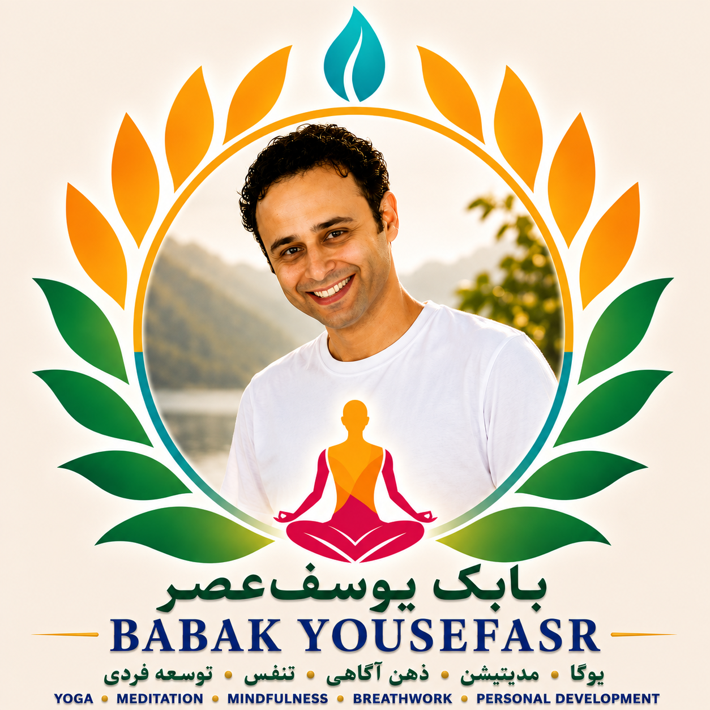

تاریخ تولد: اردیبهشت ۱۳۵۶
Date of Birth: May 1977
موبایل: 00989153396328
Mobile: +98 915 339 6328
موبایل: 00989114296536
Mobile: +98 911 429 6536
واتساپ و تلگرام: 00989114296536 | 00989153396328
WhatsApp & Telegram: +98 911 429 6536 | +98 915 339 6328
ایمیل: babakyousefasr645@gmail.com
Email: babakyousefasr645@gmail.com
اینستاگرام: @babak_yoosefasr
Instagram: @babak_yoosefasr
مدرس دوزبانه (فارسی–انگلیسی) یوگا و مدیتیشن با بیش از ۱۸ سال تجربه مستمر در تمرین، آموزش و پژوهش در حوزههای یوگا، مدیتیشن، تکنیکهای تنفسی و سلامت جامعنگر.
A bilingual (Persian–English) Yoga and Meditation teacher with more than 18 years of continuous experience in practice, teaching, and research in Yoga, Meditation, breathing techniques, and holistic wellness.
آموزشدیده در هند و نپال تحت نظر اساتید و مراکز معتبر بینالمللی.
Trained in India and Nepal under the guidance of internationally recognized teachers and institutions.
دارای رویکردی تلفیقی که آموزههای سنتی شرق شامل آشتانگا یوگا، هاتا یوگا، مدیتیشن، مانترا، تکنیکهای تنفسی و آیینهای تبتی را با مطالعات نوین در زمینه روانشناسی، توسعه فردی، فنگ شویی، رنگدرمانی و مطالعات متافیزیکی پیوند میدهد.
His approach integrates traditional Eastern teachings, including Ashtanga Yoga, Hatha Yoga, Meditation, Mantra, breathing techniques, and Tibetan practices, with modern studies in psychology, personal development, Feng Shui, color therapy, and metaphysical studies.
پیشینه تحصیلی در مهندسی نرمافزار موجب شکلگیری رویکردی تحلیلی، منظم و کاربردی در آموزش و مربیگری شده است.
His academic background in Software Engineering has contributed to an analytical, structured, and practical approach to teaching and coaching.
وگان از سال ۱۳۸۶ و نویسنده یک مجموعه شعر دو زبانه منتشرشده.
Vegan since 2007 and the author of a published bilingual poetry collection.
2024
گواهینامه ۲۰۰ ساعته مربیگری آشتانگا یوگا، هاتا یوگا و مدیتیشن
200-hour certification in Ashtanga Yoga, Hatha Yoga, and Meditation Teacher Training
Nepal Yoga Home — کاتماندو، نپال
Nepal Yoga Home — Kathmandu, Nepal
2013
دوره تربیت مدرس سودارشان کریا
Sudarshan Kriya Teacher Training Course
Art of Living International Ashram — بنگلور، هند
Art of Living International Ashram — Bangalore, India
2012
مدیتیشن ساهج سمادهی و دورههای پیشرفته تنفس
Sahaj Samadhi Meditation and Advanced Breathing Courses
Art of Living International Ashram — بنگلور، هند
Art of Living International Ashram — Bangalore, India
دوره مربیگری سری سری یوگا
Sri Sri Yoga Teacher Training Course
Art of Living International Ashram — بنگلور، هند
Art of Living International Ashram — Bangalore, India
2009
دورههای استادی ریکی
Reiki Master Training Courses
Additional Training
Legal Record
دارای گواهی عدم سوءپیشینه کیفری صادره از قوه قضائیه جمهوری اسلامی ایران
Holder of an official criminal background clearance certificate issued by the Judiciary of the Islamic Republic of Iran.
مهندسی کامپیوتر – گرایش نرمافزار
Computer Engineering – Software Engineering
مدرک کاردانی / کارشناسی
Associate Degree / Bachelor's Degree
سال اخذ مدرک: ۱۳۸۱
Year of Graduation: 2002
A Lover's Prayer to the Beloved
مجموعه شعر دو زبانه (فارسی – انگلیسی)
Bilingual poetry collection (Persian – English)
انتشارات اتاق آبی، تهران
Blue Room Publishing, Tehran
سال انتشار: ۱۴۰۰
Publication Year: 2021
Yoga & Meditation
Holistic Wellness & Personal Development
برای ارتباط، همکاری، برگزاری دورهها و کارگاههای یوگا و مدیتیشن میتوانید از راههای زیر با من در تماس باشید.
For communication, collaboration, Yoga and Meditation courses, and workshops, you can contact me through the following channels.
📱 موبایل: 00989153396328
📱 Mobile: +98 915 339 6328
📱 موبایل: 00989114296536
📱 Mobile: +98 911 429 6536
💬 واتساپ و تلگرام: 00989114296536 | 00989153396328
💬 WhatsApp & Telegram: +98 911 429 6536 | +98 915 339 6328
📧 ایمیل: babakyousefasr645@gmail.com
📧 Email: babakyousefasr645@gmail.com
📷 اینستاگرام: @babak_yoosefasr
📷 Instagram: @babak_yoosefasr